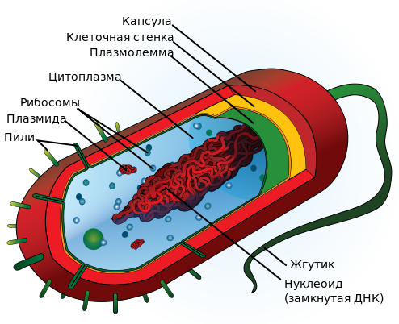
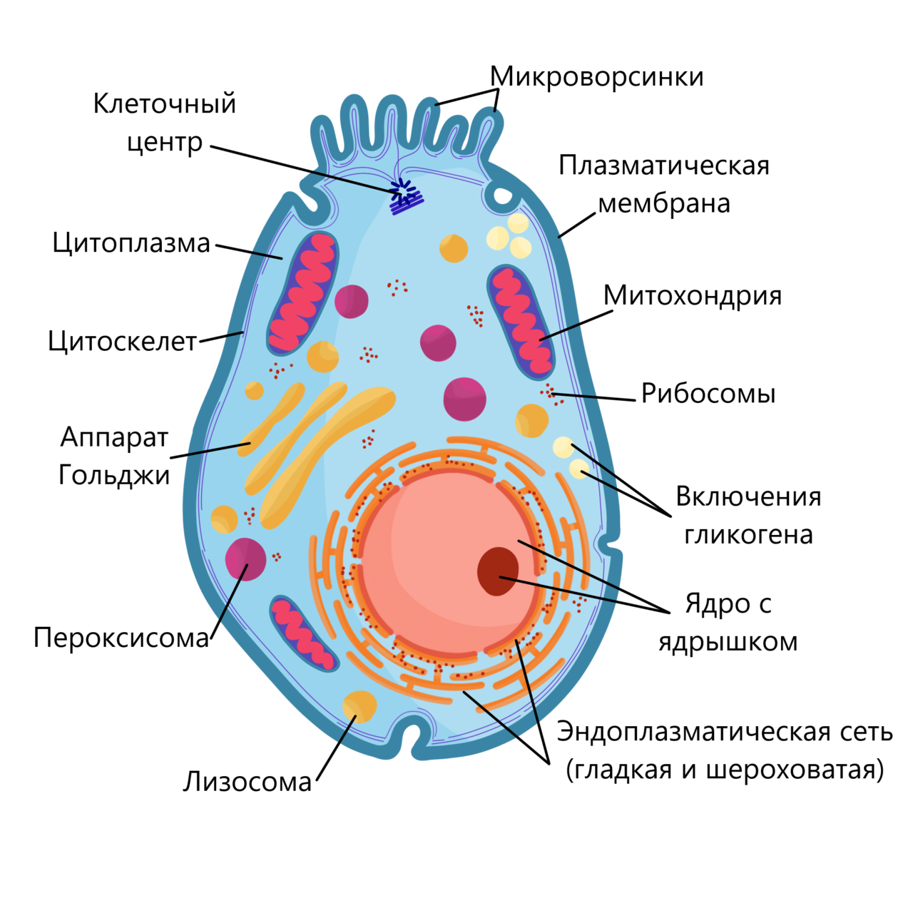
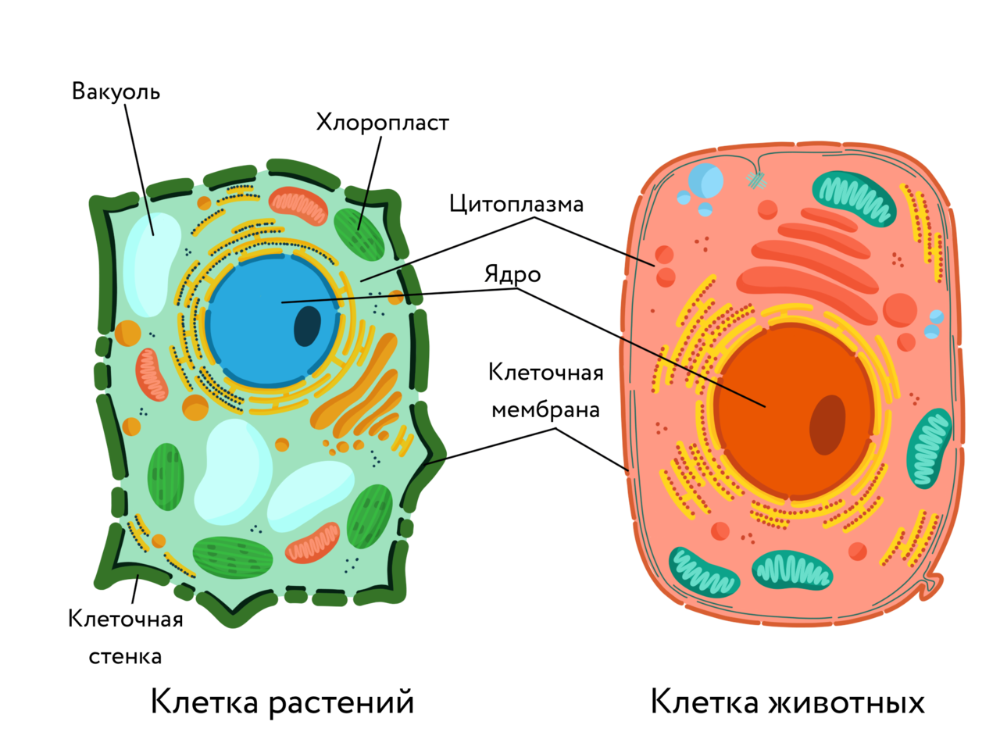

Введение в биологию.
Биология изучает все живое. Основные свойства живых систем:
- Открытые системы(обмен веществами и энергией с окружающей средой)
- Саморегуляция(способность воспринимать и прерабатывать информацию)
- Рост и развитие(способность создавать и поддерживать сложную организацию)
- Размножение с сохранением наследственных свойств
- Наследственность и изменчивость
- Способность к эволюции(приспособительными изменениями в ряду поколений)
Клетка - элементарная единица всего живого. Только целая клетка имеет основные признаки живого.
Клетки, живые организмы и жизнь на Земле - сложные системы. Характерна иерархичность - одни системы входят в состав других систем более высокого уровня в качестве их подсистем. У систем высшего уровня появляются свйства, которые на предыдущем уровне отсутствуют.
Уровни организации живого:
- Молекулярно - клеточный
- Организменный
- Популяционно - видовой
- Экосистемный
Молекулярно - клеточный уровень.
Клетки состоят из разных органелл, органеллы - из молекул(в том числе и полимеров), а молекулы состоят из атомов.
Размеры.
Системы разного уровня имеют разные размеры: от нескольких нанометров(крупные молекулы и мелкие органоиды) до нескольких тысяч километров(крупные экосистемы и вся биосфера).
Единицы измерения:
- 1м = 1000мм, 1мм = 10-3м
- 1мм = 1000мкм(μm), 1мкм = 10-6м
- 1мкм = 1000нм, 1нм = 10-9м
Клеточная теория.
Микроскоп - главный инструмент клеточного биолога. клеточная биология началась тогда, когда клетки стало возможно увидеть.
Роберт Гук(1635 - 1703).
В 1665 году Роберт Гук выпустил книгу Micrographia и ввел термин "клетка".
Антони ван Левенгук(Голландия, 17 век).
Научился делать линзы с увеличением более 200х. Свои наблюдени он описывал Лондонскому Королевскому Обществу. Был избран его членом в 1680 году.
Левенгук впервые описал бактерий(в 1676 году) и сперматазоид(в 1677 году).
Роберт Броун(Англия, 1831 год).
Броун первым определил ядро в растительной клетке и опубликовал эти сведения в 1831 году.
Клетка - основа жизни.
В 1838 - 39 году Теодор Шванн и Матиас Шлейден создали клеточную теорию.
Положения клеточной теории, выдвинутые Шванном:
- Клетка - элементарная единица всего живого. Все живые организмы состоят из одной или нескольких клеток
- Все клетки сходны по строению и химичекому составу
- Каждая клетка возникает из предшествующей клетки
- Все клетки произошли от общего предка
Сходство клеток по химическому составу.
Все клетки состоят из атомов и примерно одних и тех же химических элементов:
- Углерод(С)
- Водород(Н)
- Кислород(О)
- Азот(N)
- Фосфор(Р)
- Сера(S)
- Натрий(Na)
- Калий(К)
- Кальций(Са)
- Хлор(Cl)
- Магний(Mg)
- Железо(Fe)
- Йод(I)
Все клетки содержат белки, липиды, углеводы и нуклеиновые кислоты. Белки, липиды и нуклеиновые кислоты
Полимеры - крупные молекулы, состоящие из большого количества одинаковых более мелких молекул - мономеров. Полимеры у всех разные, а мономеры - одинаковые.
Белки всех живых организмов строятся из одних и тех же мономеров - аминокислот(аминокислот 20 различных типов).
ДНК всех живых организмов строится из одних и тех же мономеров - нуклеотидов четырех типов.
Благодаря этому:
- Одни существа могут разлагать на мономеры(прерваривать) полимеры из других существ и строить из них свои полимеры
- Вирус может строить себя из веществ нашей клетки
- Клетка бактерии может "считывать" белки с человеческих генов - генная инженерия
Сходство клеток по строению.
У всех клеток есть:
- Наружная мембрана - пленка толщиной в две молекулы из фосфолипидов
- Рибосомы - органоиды* клетки, синтезирующие белки
*Органоид - постоянная структурно - обособленная часть клетки, выполняющая определенную функцию.
Типы клеток.
Прокариотическая клетка.

Эукариотическая клетка.

Сравнение растительной и животной клеток.

Кахдая клетка - из клетки.
Каждая клетка возникает из предшествующей делением или слиянием.
Все клетки произощли от одного общего предка - LUCA(Last Universal Common Ancestor).
{kind=link}
{kind=link}
{kind=link}